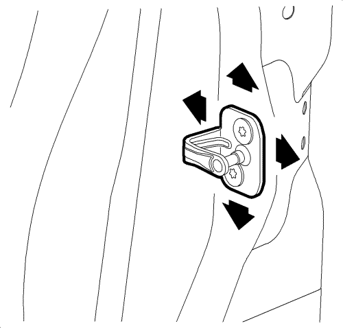

Ajuste del estribo de bloqueo de la puerta lateral trasera
Para determinar si es necesario ajustar el estribo de bloqueo, haga lo siguiente:
Advertencia : Para evitar la activación del SIR, lesiones físicas o reparaciones innecesarias del sistema SIR, no golpee la puerta o el montante de la puerta en el área del sensor de impactos laterales (SIS). Desconecte el encendido y extraiga la llave antes de realizar tareas de servicio en el área del SIS.

- Asegúrese de que la puerta está alineada correctamente dentro de la abertura de la puerta antes de realizar el ajuste del estribo de bloqueo.
- Cierre la puerta sobre el estribo de bloqueo y observe si la puerta se arrastra sobre el estribo de bloqueo haciendo que ésta se mueva hacia arriba o hacia abajo al entrar en contacto con el estribo de bloqueo. Observe también cuál es el esfuerzo de cierre necesario para enclavar totalmente el trinquete de bloqueo.
- Con un lápiz de cera, haga una marca alrededor del estribo de bloqueo para poder consultar más tarde la posición original. Afloje el estribo de bloqueo.
- Mueva el estribo de bloqueo para eliminar el arrastre sobre éste y sobre el trinquete de bloqueo de la puerta, y para colocar la puerta en la posición adecuada dentro de la abertura de la puerta. Empiece con la posición arriba/abajo y, a continuación, coloque el estribo de bloqueo de modo que se alinee correctamente con la abertura de la puerta. Establezca el ajuste interior/exterior del engranado de sellado adecuado de la puerta asegurándose de que los esfuerzos de cierre de la puerta son los correctos.
Precaución:Consulte Precaución con las fijaciones en la sección Prólogo.
- Apriete los tornillos del estribo de bloqueo. Apriete los tornillos del estribo de bloqueo de la puerta a 25 N·m (18 lib. pie).
| © Copyright Chevrolet Europe. All rights reserved |